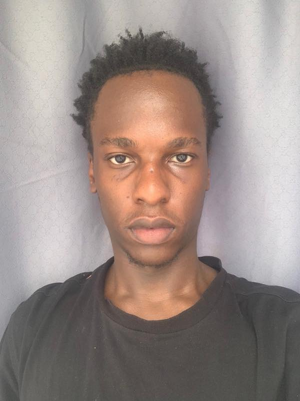

Security operations
How monitoring, triage, and clear documentation support a strong response.
Aspiring Cybersecurity Analyst
Curious about how systems stay secure, how threats unfold, and how thoughtful analysis helps teams respond with confidence.

Building the foundations. Staying curious. Practising with purpose.
01 / A little about me
I am Emmanuel Rege, a first-year student at KCA University pursuing a Bachelor’s degree in Applied Computer Science. I am passionate about technology, cybersecurity, programming, and learning how computer systems can be used to solve real-world problems. As I continue my studies, I am focused on developing my programming and cybersecurity skills and gaining practical experience in the field of computer science.
02 / Areas of interest
Three areas that keep me asking questions and building my security knowledge.
How monitoring, triage, and clear documentation support a strong response.
Recognizing patterns in security events and understanding what they might mean.
Learning how network fundamentals help protect connected systems and data.
03 / Say hello